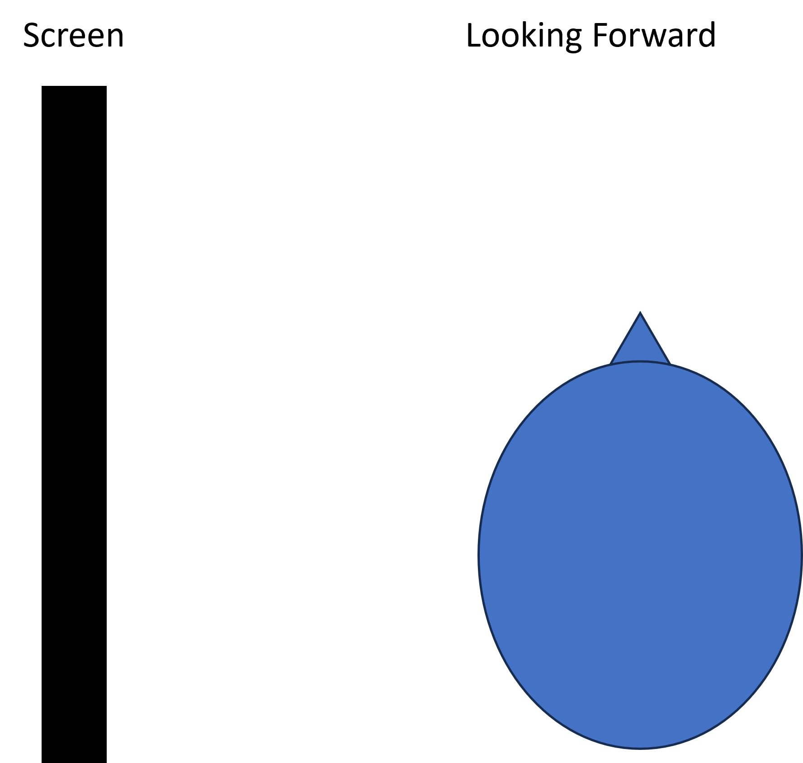

Find out when you stop seeing color in your peripheral vision.
Turn your head so you can only see the colored square in your peripheral vision. Tell someone who is looking directly at the colored square what color you see. Find out how close you can look but still not see the color.
